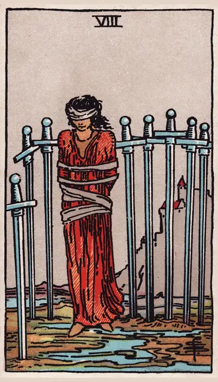

正位置ソードの8の正位置
キーワード：身動きがとれない・思い込み・不安
恋愛
不安や思い込みで、身動きがとれなくなりやすい時です。
相手の気持ちあなたへの気持ちがありながら、動けずにいるようです。
この先思い込みが外れれば、関係が動き出しそうです。
アドバイス「できない」と思い込んでいることを、疑ってみましょう。
気をつけること不安な想像を、事実だと思い込まないように。
この先思い込みが外れれば、関係が動き出しそうです。
アドバイス「できない」と思い込んでいることを、疑ってみましょう。
気をつけること不安な想像を、事実だと思い込まないように。
人間関係
周りの目が気になり、自由に振る舞えない時です。
相手の気持ちあなたとの関係で、身動きがとれないと感じているようです。
この先助けの手が、差し伸べられそうです。
アドバイス一人で悩まず、誰かに相談しましょう。
気をつけること自分を責めすぎないように。
この先助けの手が、差し伸べられそうです。
アドバイス一人で悩まず、誰かに相談しましょう。
気をつけること自分を責めすぎないように。
仕事・学業
制約が多く、動けないと感じやすい時期です。
この先抜け道が見つかりそうです。
アドバイス今できることを、一つずつ書き出しましょう。
気をつけること状況のせいにして、諦めないように。
アドバイス今できることを、一つずつ書き出しましょう。
気をつけること状況のせいにして、諦めないように。
お金
お金の制約で、動けないと感じやすい時です。
この先抜け道が見つかりそうです。
アドバイス今できることを、一つずつ書き出しましょう。
気をつけること諦めて、何もしないことのないように。
アドバイス今できることを、一つずつ書き出しましょう。
気をつけること諦めて、何もしないことのないように。
生活
暮らしの中で、身動きがとれないと感じやすい時です。
この先思っていたより、道はありそうです。
アドバイスできないと思い込んでいることを、疑ってみましょう。
気をつけること一人で悩まず、相談しましょう。
アドバイスできないと思い込んでいることを、疑ってみましょう。
気をつけること一人で悩まず、相談しましょう。
今日の運勢
気持ちが縛られたように感じる日です。
この先気持ちが少し楽になりそうです。
アドバイス小さな一歩だけ、踏み出してみましょう。
気をつけること考えすぎて、眠れなくならないように。
アドバイス小さな一歩だけ、踏み出してみましょう。
気をつけること考えすぎて、眠れなくならないように。
逆位置ソードの8の逆位置
キーワード：解放・視野が広がる・抜け出す
恋愛
不安から解放され、心が自由になる時です。
相手の気持ちあなたへの気持ちに、素直になり始めているようです。
この先心が軽くなり、関係が前に進みそうです。
アドバイス自由になった気持ちで、素直に行動しましょう。
気をつけること急に自由になりすぎて、周りを驚かせないように。
この先心が軽くなり、関係が前に進みそうです。
アドバイス自由になった気持ちで、素直に行動しましょう。
気をつけること急に自由になりすぎて、周りを驚かせないように。
人間関係
周りの目から、自由になれる時です。
相手の気持ちあなたとの関係で、肩の力が抜けてきたようです。
この先自然体で人と付き合えそうです。
アドバイス自分らしく振る舞いましょう。
気をつけること反動で、極端な行動に出ないように。
この先自然体で人と付き合えそうです。
アドバイス自分らしく振る舞いましょう。
気をつけること反動で、極端な行動に出ないように。
仕事・学業
制約から抜け出し、動き出せる時期です。
この先新しい道が開けそうです。
アドバイス新しい選択肢を、試してみましょう。
気をつけること再び同じ思い込みに戻らないように。
アドバイス新しい選択肢を、試してみましょう。
気をつけること再び同じ思い込みに戻らないように。
お金
お金の制約から、抜け出せる時です。
この先ゆとりが生まれそうです。
アドバイス新しい選択肢を、調べてみましょう。
気をつけること解放感から、使いすぎないように。
アドバイス新しい選択肢を、調べてみましょう。
気をつけること解放感から、使いすぎないように。
生活
窮屈な暮らしから、抜け出せる時です。
この先気持ちが軽くなりそうです。
アドバイス新しいことを、試してみましょう。
気をつけること反動で、極端な行動に出ないように。
アドバイス新しいことを、試してみましょう。
気をつけること反動で、極端な行動に出ないように。
今日の運勢
気持ちが軽くなる日です。
この先解放感のある一日になりそうです。
アドバイス行ってみたかった場所に出かけましょう。
気をつけること油断して、同じ悩みを繰り返さないように。
アドバイス行ってみたかった場所に出かけましょう。
気をつけること油断して、同じ悩みを繰り返さないように。
このページの文章は、アプリ「ひとやすみタロット」の結果に使っている文章です。アプリでは、あなたの相談や、カードが出た位置（今の状況・これからの流れ・アドバイス）に合わせて、この中から文章を選びます。逆位置の読み方は逆位置のことをご覧ください。
「ソードの8」が出たら、あなたの相談ではどう読む？
アプリでは、質問への答えに合わせて、カードの言葉をあなたの相談に合わせて届けます。
Android 対応・会員登録なし